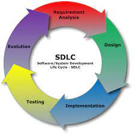

Home¶
SDLC stands for Software Development Life Cycle. SDLC is a process that consists of a series of planned activities to develop or alter the Software Products. This tutorial will give you an overview of the SDLC basics, SDLC models available and their application in the industry. This tutorial also elaborates on other related methodologies like Agile, RAD and Prototyping.
Why to Learn SDLC?¶
Software Development Life Cycle (SDLC) is a process used by the software industry to design, develop and test high quality softwares. The SDLC aims to produce a high-quality software that meets or exceeds customer expectations, reaches completion within times and cost estimates.
SDLC is a process followed for a software project, within a software organization. It consists of a detailed plan describing how to develop, maintain, replace and alter or enhance specific software. The life cycle defines a methodology for improving the quality of software and the overall development process.
SDLC is the acronym of Software Development Life Cycle.
It is also called as Software Development Process.
SDLC is a framework defining tasks performed at each step in the software development process
ISO/IEC 12207 is an international standard for software life-cycle processes. It aims to be the standard that defines all the tasks required for developing and maintaining software.
SDLC Models¶
There are various software development life cycle models defined and designed which are followed during the software development process. These models are also referred as Software Development Process Models. Each process model follows a Series of steps unique to its type to ensure success in the process of software development.
Following are the most important and popular SDLC models followed in the industry
Waterfall Model
Iterative Model
Spiral Model
V-Model
Big Bang Model